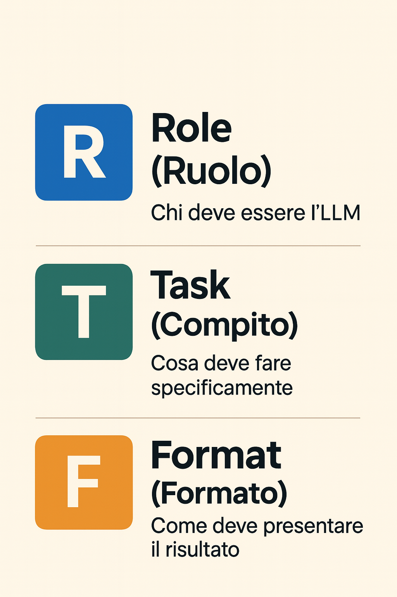
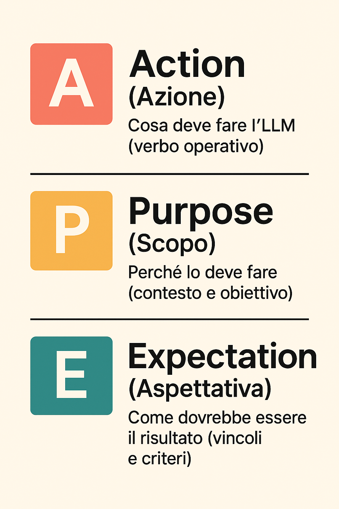
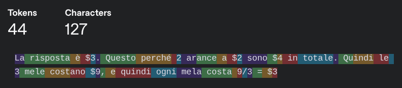
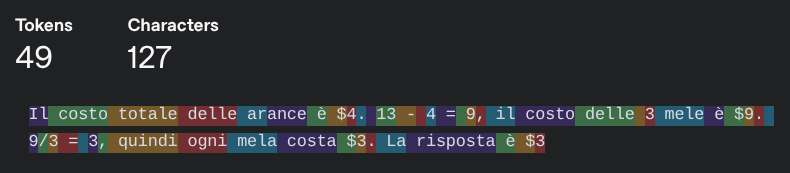

L’Arte del dialogare con la macchina - Introduzione al Prompting
Corso LLM - Modulo 3
Il prompting è la competenza fondamentale per interagire efficacemente con gli LLM. Si tratta di strutturare le richieste in modo che il sistema possa interpretarle correttamente e produrre output utili.
La differenza tra un prompt efficace e uno inefficace può essere drammatica. “Scrivi una email” produce risultati generici. “Scrivi una email di follow-up commerciale sintetica per un cliente B2B che non ha risposto alla proposta inviata 10 giorni fa” produce risultati utilizzabili.
Questo modulo presenta framework pratici, tecniche consolidate ed esercizi concreti per sviluppare competenze di prompting applicabili immediatamente nel contesto lavorativo.
Il Principio Fondamentale: Contesto e Specificità
Gli LLM possiedono vaste conoscenze generali ma mancano di contesto specifico sulla vostra situazione. L’LLM non sa chi siete, non conosce il vostro ruolo aziendale, non sa quale problema state cercando di risolvere, non conosce i vincoli specifici del vostro settore o della vostra organizzazione, e non può intuire in quale formato vi serve l’output.
Un LLM senza contesto è come un consulente esperto al primo giorno in azienda: competente ma privo delle informazioni specifiche necessarie per essere immediatamente produttivo. Il vostro compito è fornire quelle informazioni attraverso prompt ben strutturati.
ESERCIZIO 1: Il Ruolo
Task: spiegare come funziona la lacca per capelli. Provate questi tre prompt:
Prompt 1: Agisci come un insegnante di scuola materna che spiega concetti ai tuoi bambini di 5 anni. Spiega come funziona la lacca per capelli
Prompt 2: Agisci come un PhD in chimica dei polimeri. Spiega come funziona la lacca per capelli
Prompt 3: Agisci come un venditore in profumeria. Spiega come funziona la lacca per capelli
Il ruolo determina completamente l’approccio e l’utilità dell’output.
Sfida creativa: Dopo aver osservato le tre risposte completamente diverse, riuscite a trovare un quarto ruolo che produca una spiegazione ancora diversa dalle precedenti? Pensate a professioni o prospettive inusuali che potrebbero dare un punto di vista unico sul funzionamento della lacca.
Il Framework RTF (Role-Task-Format)
RTF è il framework fondamentale per strutturare prompt efficaci. Comprende tre componenti:
- R - Role (Ruolo): Chi deve essere l’AI
- T - Task (Compito): Cosa deve fare specificamente
- F - Format (Formato): Come deve presentare il risultato
RTF copre l’80% dei casi d’uso quotidiani con solo tre elementi da ricordare.

Esempio RTF in Azione:
Prompt Debole:
Dammi idee marketing per un prodotto di bellezza durante il Black Friday
Prompt RTF: Sei un brand manager growth marketer specializzato in e-commerce B2C esperto nel settore haircare premium
Crea 10 strategie promozionali Black Friday per Keramine H, linea trattamenti capelli venduta in farmacia e profumeria
Per ogni strategia: nome promo (3-5 parole), meccanica, target specifico (es. donne 35-50 con capelli trattati)
Il primo prompt genera suggerimenti generici. Il secondo produce idee specifiche e implementabili.
L’Importanza del Formato di Output
Il formato giusto può trasformare un output mediocre in uno eccellente. Stesso contenuto, formati diversi, usi diversi.
Esempio: Dovete comunicare i risultati di un’analisi customer satisfaction.
Notate come lo stesso contenuto cambia completamente utilità in base al formato richiesto:
- “Riassumi in un paragrafo” → Testo continuo per report e documenti formali, facile da integrare in comunicazioni più ampie
- “5 bullet point” → Punti chiave immediati, ideale per slide o quando serve sintesi estrema con impatto visivo
- “Tabella con Area | Score | Azione” → Struttura che facilita confronti, prioritizzazione e assegnazione responsabilità operative
- “Formato email con subject e CTA” → Comunicazione pronta all’uso con tutti gli elementi necessari per generare una risposta
La lezione: specificare il formato desiderato è cruciale quanto definire il contenuto. Un’analisi brillante presentata nel formato sbagliato perde gran parte del suo valore.
Il Framework APE (Action-Purpose-Expectation)
APE è un framework alternativo più agile, utile quando il ruolo è meno rilevante del risultato:
- A - Action: Cosa deve FARE l’AI (verbo operativo)
- P - Purpose: PERCHÉ lo deve fare (contesto e obiettivo)
- E - Expectation: COME dovrebbe essere il risultato (vincoli e criteri)
APE funziona perché costringe a chiarire esattamente cosa serve, perché serve e come verificare il successo.

Esempio APE vs RTF:
Situazione: Dovete riassumere un report di 50 pagine per il CEO.
Approccio RTF: R: Sei un senior business analyst con 10 anni di esperienza T: Riassumi il report trimestrale allegato F: Sintesi di massimo 300 parole con 3 punti chiave principali
Approccio APE (più diretto): A: RIASSUMI il report trimestrale in allegato P: per il CEO che ha solo 2 minuti prima della riunione del consiglio E: Max 300 parole, 3 punti principali, focus su risultati economici
APE va più diretto al punto quando il ruolo specifico aggiunge poco valore perché abbiamo specificato lo scopo.
Nota importante: Questo esempio serve per velocizzare la SCRITTURA di un riassunto, non per sostituire la lettura del report. Chi usa questo prompt deve aver già letto e compreso il documento di 50 pagine per verificare che il riassunto includa le informazioni corrette e non ometta elementi critici. In questo caso l’LLM è uno strumento per accelerare la redazione, non un sostituto della comprensione umana del contenuto.
L’Evoluzione: R.C.T.F. - Quando Serve Più Contesto
Man mano che i vostri prompt diventeranno più sofisticati, sentirete il bisogno di aggiungere un elemento cruciale: il Contesto. Ecco che RTF evolve in R.C.T.F. (Role-Context-Task-Format).
Il Contesto è tutto ciò che l’AI deve sapere sulla situazione specifica:
- Chi è il destinatario finale
- Qual è la situazione attuale
- Quali sono i vincoli o le sensibilità
- Cosa è successo prima
Esempio: Il Potere del Contesto
Prompt senza contesto: R: Sei un customer success manager T: Scrivi una email di follow-up a un cliente F: Email professionale di 150 parole
Stesso prompt con contesto: R: Sei un customer success manager
C: Il cliente (Azienda ABC, nostro cliente da 3 anni) non accede alla piattaforma da 30 giorni. L’ultimo accesso coincide con un bug che abbiamo risolto. Hanno un rinnovo tra 2 mesi.
T: Scrivi una email di follow-up per riattivare l’engagement
F: Email professionale di 150 parole, tono empatico non commerciale
Il primo genera una email generica. Il secondo produce una comunicazione mirata che affronta il problema specifico, riconosce la storia del cliente, e prepara il terreno per il rinnovo senza essere invadente.
ESERCIZIO 2: Framework Face-Off
Scenario: Email di benvenuto per nuovo salone partner Contesto: Un parrucchiere è appena entrato nella rete Axenia (divisione professionale SOCO)
Punto di partenza - Prompt base: Scrivi email di benvenuto per nuovo salone partner
Il vostro compito: Riscrivete il prompt usando i framework che preferite. Potete scegliere tra:
- APE (Action-Purpose-Expectation)
- RTF (Role-Task-Format)
- R.C.T.F. (Role-Context-Task-Format)
- O anche combinazioni/varianti personalizzate
L’obiettivo è ottenere un’email che:
- Faccia sentire il parrucchiere parte della famiglia Axenia
- Comunichi i vantaggi pratici della partnership
- Includa informazioni su supporto e prossimi passi
- Mantenga un tono professionale ma caloroso
Nota: Non esiste un framework “giusto” - scegliete quello che vi sembra più adatto al task. L’importante è che il prompt finale produca un’email utilizzabile, non che segua perfettamente una formula.
La CoT (Chain of Thought)
I modelli hanno bisogno di token per pensare
Problema: Emily compra 3 mele e 2 arance. Ogni arancia costa $2. Il costo totale della frutta è $13. Quanto costa una mela?
Risposta Assistente 1: “La risposta è $3. Questo perché 2 arance a $2 sono $4 in totale. Quindi le 3 mele costano $9, e quindi ogni mela costa 9/3 = $3”.
Risposta Assistente 2: “Il costo totale delle arance è $4. 13 - 4 = 9, il costo delle 3 mele è $9. 9/3 = 3, quindi ogni mela costa $3. La risposta è $3”.
Quale approccio è più affidabile?
Entrambe le risposte sono matematicamente corrette ($3), ma notate la differenza cruciale:
- L’Assistente 1 dichiara subito la risposta e poi la giustifica a ritroso
- L’Assistente 2 costruisce la soluzione passo dopo passo e solo alla fine presenta la risposta
È come se il primo assistente tentasse di risolvere tutto il problema in un singolo “salto mentale”, mentre il secondo divide il problema in piccoli calcoli sequenziali, usando ogni risultato intermedio come base per il passo successivo.
Questa differenza è fondamentale. Quando un modello “ragiona ad alta voce” attraverso i passaggi intermedi prima di concludere, ha maggiori probabilità di produrre risposte corrette, specialmente in problemi più complessi.


Chain of Thought è proprio questo: permettere al modello di generare token intermedi di ragionamento invece di “sparare” subito la risposta.
La frase chiave per attivarlo: “Ragiona passo per passo” o “Let’s think step by step”
L’Approccio Iterativo
Il prompt perfetto al primo tentativo è raro. Il processo standard prevede:
- Primo prompt: risultato approssimativo
- Analisi: identificare cosa manca o non funziona
- Refinement: aggiustare ruolo/contesto/task/formato
- Ripetere fino al risultato desiderato
Esempio di Iterazione Reale
Iterazione 1: Scrivi una email per invitare a un webinar Risultato: Troppo generico, tono sbagliato
Iterazione 2: R: Sei un marketing manager T: Scrivi una email di invito per webinar su AI per HR F: Email di 200 parole Risultato: Meglio, ma manca urgency e target
Iterazione 3: R: Sei un marketing manager specializzato in HR Tech
C: Webinar gratuito il 15/11/2024 per HR manager di PMI italiane. Solo 100 posti. Speaker: ex-Google. Tema: “AI per recruiting senza bias”
T: Scrivi email di invito che crei urgency senza essere spam
F: Max 200 parole, subject line + preview text + body + CTA chiara
Risultato: Perfetto!
La Decomposizione
Per task complessi, è più efficace spezzare in passaggi sequenziali piuttosto che tentare un unico mega-prompt.
Invece di: Crea un piano di marketing completo per il lancio prodotto
Usare: Step 1: “Analizza i 3 competitor principali: positioning e pricing” Step 2: “Definisci 3 strategie di positioning differenzianti” Step 3: “Sviluppa piano marketing 6 mesi per strategia scelta” Step 4: “Crea budget dettagliato con ROI atteso”
Ogni output diventa input per il passo successivo.
Conclusioni: L’Arte del Prompting
Il prompting efficace è un’arte che si sviluppa con la pratica. I framework presentati in questo modulo sono punti di partenza, non regole rigide. Con l’esperienza, svilupperete un intuito per quale approccio funziona meglio in ogni situazione.
Principi Chiave da Ricordare
Sperimentazione: Non esiste il prompt perfetto universale. Provate diverse formulazioni e imparate dai risultati.
Iterazione: Raffinate progressivamente i vostri prompt basandovi sui feedback e sui risultati ottenuti.
Contesto: Più informazioni rilevanti fornite, migliori saranno i risultati. Il contesto è fondamentale.
Specificità: Prompt vaghi generano risultati vaghi. Siate precisi nelle vostre richieste.
Ricordate: l’obiettivo non è creare il prompt perfetto, ma ottenere risultati utili che vi aiutino a risolvere problemi reali e aumentare la vostra produttività.
Sperimentazione e Automazione: La Chiave del Prompting Efficace
La vera maestria nel prompting si sviluppa attraverso la sperimentazione continua in diversi domini della vita, non solo quelli lavorativi.
Tre Strategie per Migliorare
Automatizza i Task Ripetitivi: Identificate attività ricorrenti nella vostra giornata, settimana o mese che potreste automatizzare con prompt ben strutturati. Ogni volta che vi trovate a ripetere un’attività simile, chiedetevi: “Posso creare un prompt template per questo?”
Processo Iterativo: Migliorate progressivamente i vostri prompt nel tempo, adattandoli in base ai risultati e alle nuove idee che emergono. Tenete un “prompt journal” dove annotate i prompt di successo e le loro evoluzioni.
Sperimenta ai Limiti: Osate con prompt creativi e non convenzionali per esplorare le capacità degli LLM e ampliare le vostre competenze. Provate combinazioni inusuali di ruoli, formati innovativi, o approcci che sembrano “troppo ambiziosi”.
Osservando come gli LLM rispondono a varie formulazioni, svilupperete un’intuizione preziosa per creare prompt sempre più efficaci. Questa competenza diventerà sempre più cruciale nel mondo professionale dei prossimi anni.